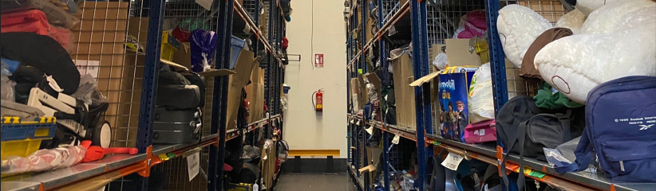

<div fxLayout="column" fxLayoutAlign="space-around center">
  <h1 >Bienvenido a ObjPerdidosApp</h1>
  <h3 >Localize sus objetos perdidos o ayude a encontrarlos</h3>
  <div >
    <button  mat-raised-button color="primary" (click)="login()" > Iniciar sesión</button>
  </div>
</div>

